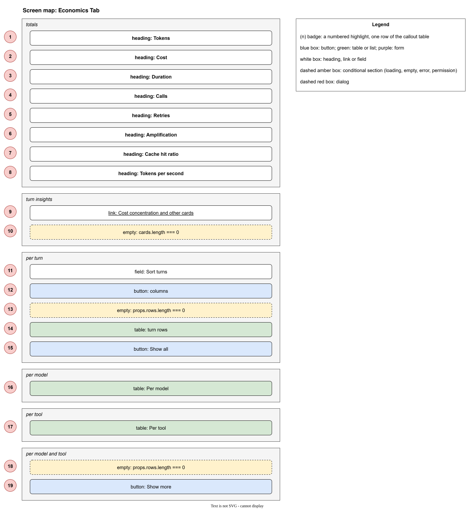

active approved inferred covers web/src/*, web/src/design-system/*
Economics Tab Screen Map
This map shows where a reader sees what one session cost and where the cost came from. It lets them find the costliest turn, the slowest one and the one with errors, and compare models and tools. It also shows which figures are left blank when the log does not carry them.
What the diagram shows
- Eight totals open the tab, each with an explanation and an unavailable marker where the log lacks the figure
web/src/EconomicsTab.tsx:614-730. - Turn insight cards select a turn in the per turn table and show all turns when the turn is outside the top list
web/src/EconomicsTab.tsx:425-510web/src/EconomicsTab.tsx:526-531. - The per turn table starts with the top turns by cost; sorting is offered after Show all
web/src/EconomicsTab.tsx:521-523web/src/EconomicsTab.tsx:554-567. - Per model and per tool tables share one panel with an empty state and batch reveal
web/src/EconomicsTab.tsx:376-423web/src/EconomicsTab.tsx:747-767.
Capability and related functionality
The tab lives inside Session Workspace Screen. The turn insights come from the helpers described in Web Overview, and the unattributed turn rule is in Web Specification.
Economics Tab Screen screen map

Code references
| Badge | Element | Code |
|---|---|---|
| 1 | <Stat Tokens |
web/src/EconomicsTab.tsx:615-615 |
| 2 | <Stat Cost |
web/src/EconomicsTab.tsx:635-635 |
| 3 | <Stat Duration |
web/src/EconomicsTab.tsx:663-663 |
| 4 | <Stat Calls |
web/src/EconomicsTab.tsx:674-674 |
| 5 | <Stat Retries |
web/src/EconomicsTab.tsx:683-683 |
| 6 | <Stat Amplification |
web/src/EconomicsTab.tsx:694-694 |
| 7 | <Stat Cache hit ratio |
web/src/EconomicsTab.tsx:705-705 |
| 8 | <Stat Tokens per second |
web/src/EconomicsTab.tsx:715-715 |
| 9 | <Stat Cost concentration and other cards |
web/src/EconomicsTab.tsx:439-444 |
| 10 | cards.length === 0 empty section |
web/src/EconomicsTab.tsx:508-508 |
| 11 | <SortSelect Sort turns |
web/src/EconomicsTab.tsx:555-561 |
| 12 | <ColumnChooser columns |
web/src/EconomicsTab.tsx:568-568 |
| 13 | props.rows.length === 0 empty section |
web/src/EconomicsTab.tsx:573-573 |
| 14 | <DataRows turn rows |
web/src/EconomicsTab.tsx:578-583 |
| 15 | <Button Show all |
web/src/EconomicsTab.tsx:588-588 |
| 16 | <EconPanel Per model |
web/src/EconomicsTab.tsx:747-747 |
| 17 | <EconPanel Per tool |
web/src/EconomicsTab.tsx:758-758 |
| 18 | props.rows.length === 0 empty section |
web/src/EconomicsTab.tsx:402-402 |
| 19 | <Button Show more |
web/src/EconomicsTab.tsx:415-415 |